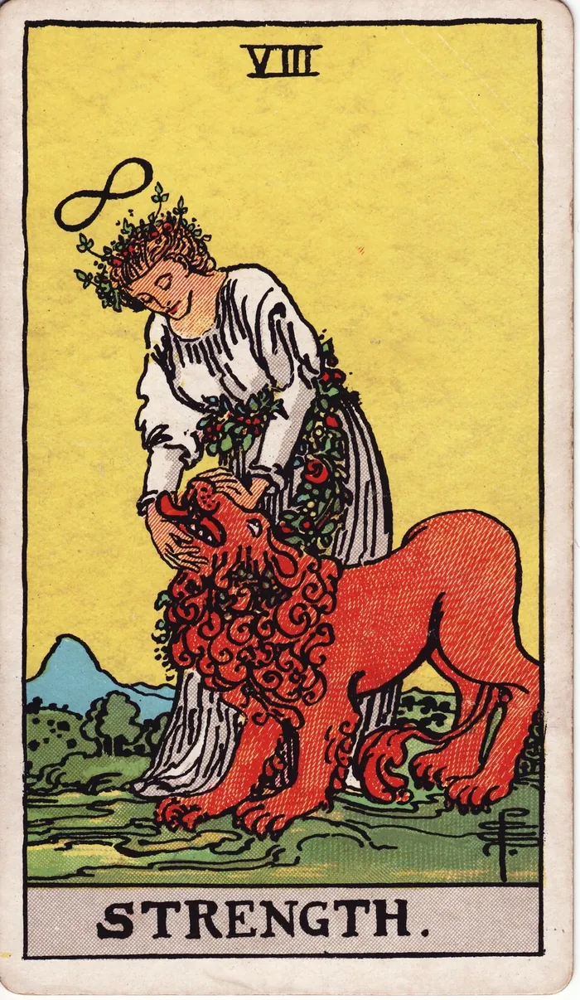

Magia y esoterismo
La Golden Dawn y el tarot: un laboratorio de símbolos en el Londres de 1888
Una mujer cierra sin esfuerzo las fauces de un león que se deja guiar por una cadena de flores. Antes de llegar a esa carta de 1909, la Fuerza pasó por un laboratorio de símbolos en el Londres victoriano, donde poetas, actrices y estudiosos de lo oculto le dieron un nombre secreto: la Hija de la Espada Flamígera.

Hay lugares donde las imágenes se ponen a prueba. A finales del siglo XIX, en Londres, uno de ellos fue una sociedad secreta que trató las cartas del tarot como un mapa: cada figura era una puerta, una letra, un astro, un tramo de camino. Se llamaba Orden Hermética de la Golden Dawn, el «Alba Dorada», y de su manera de mirar salieron los dos mazos esotéricos más influyentes del siglo XX.
En este blog ya seguimos el tarot desde los juegos de las cortes italianas hasta el libro egipcio que soñó el siglo XVIII, y conocimos a Pamela Colman Smith, que entró a esta orden en 1901. Hoy abrimos la puerta del taller donde se armaron muchas de las correspondencias que todavía acompañan a las cartas.
Londres, 1888
El 12 de febrero de 1888, tres masones, William Robert Woodman, William Wynn Westcott y Samuel Liddell «MacGregor» Mathers, firmaron compromisos de fidelidad y con ellos fundaron la orden. En marzo de ese año abrió en Londres su primer templo, Isis-Urania. Le siguieron otros en Weston-super-Mare, Bradford, Edimburgo y París, todos con nombres de divinidades egipcias.
Como muchas sociedades esotéricas, la Golden Dawn se contó a sí misma un origen antiguo. Westcott decía haber descifrado un manuscrito que lo llevó hasta una adepta alemana, Fräulein Sprengel, quien le habría permitido abrir una rama inglesa de su orden. De ella nunca apareció rastro documental, y el relato vive hoy como lo que fue para sus miembros: un mito de fundación, una puerta narrativa para entrar a la orden.
La Golden Dawn admitía a mujeres, algo que no hacía la sociedad rosacruz de la que venían sus fundadores. Hacia 1896, sus cinco templos registraban 315 personas iniciadas, 119 de ellas mujeres. Entre sus miembros hubo un poeta, W. B. Yeats; actrices como Florence Farr y Maud Gonne; la artista Moina Mathers, hermana del filósofo Henri Bergson; escritores como Arthur Machen. Y, desde 1898, Aleister Crowley.
Una herencia francesa
Las piezas venían de antes. En 1781, en París, el tarot se había leído como un libro de sabiduría antigua, y a mediados del siglo XIX el escritor francés Éliphas Lévi construyó su Dogme et rituel de la haute magie sobre el número 22: el de las letras del alfabeto hebreo y el de los triunfos del tarot. Lévi popularizó además la palabra «ocultismo», que la Golden Dawn adoptó para nombrar su propia manera de ver el mundo.
En 1888, el mismo año de la fundación, Mathers publicó un librito titulado The Tarot. En pocas páginas reunía el simbolismo de cada triunfo, los significados de las cartas, maneras de disponerlas para leerlas y hasta las reglas para jugar con ellas. El tarot seguía siendo un juego, y empezaba a ser también otra cosa.
Un mapa de veintidós caminos
Dentro de la orden, el camino espiritual se organizaba en grados asociados con las diez sefirot del Árbol de la Vida de la cábala, las emanaciones de lo divino. Cada sefirá se unía a números, letras, colores y cartas del tarot. Subir de grado era, en el lenguaje de la orden, recorrer ese árbol.
El texto de la orden sobre las cartas se conoce como Book T. Crowley lo publicó en 1912 en su revista The Equinox. Ahí cada triunfo se une a una letra hebrea y a un elemento, un planeta o un signo del zodiaco, y El Loco abre la serie, asociado al aire. Hasta el As de Bastos lleva el mapa dentro: alrededor de su vara arden «veintidós llamas saltarinas» que responden a los caminos (traducción propia).
Los nombres secretos de las cartas
Lo más hermoso de Book T quizá sean sus títulos. Además de su nombre conocido, cada triunfo recibe otro, largo y ceremonial, como si las cartas tuvieran un nombre de todos los días y un nombre de iniciación. La Sacerdotisa es «la Sacerdotisa de la Estrella de Plata». La Estrella, «la Hija del Firmamento, la que habita entre las Aguas». La Luna, «la Regente del Flujo y el Reflujo, Criatura de los Hijos del Poderoso». El Mundo, «el Grande de la Noche del Tiempo». Y la Fuerza, «la Hija de la Espada Flamígera» (traducciones propias). La lista se cierra con una frase solemne: «Tales son los títulos de las moradas o triunfos de Thooth» (traducción propia).
Los arcanos menores también tienen nombre. El dos de espadas es «el Señor de la Paz Restaurada»: dos espadas cruzadas, sostenidas por manos de luz, con una rosa de cinco pétalos en el punto donde se encuentran. El texto dice que la rosa está ahí «como si el propio dolor hubiera dado a luz la belleza» (traducción propia).
La Fuerza y la Justicia cambian de lugar
En los mazos tradicionales, la Justicia lleva el número VIII y la Fuerza el XI. Book T conserva esos números, pero une a la Fuerza con Leo, el signo del león, y a la Justicia con Libra, el de la balanza. Como Leo va antes que Libra en el zodiaco, en su tabla la Fuerza aparece antes que la Justicia, aunque siga marcada con el XI.
En 1909, el mazo de Waite y Smith cambió también los números: la Fuerza pasó a ser la VIII y la Justicia la XI. Waite prefirió no explicarlo. En su guía escribió: «Por razones que me satisfacen, esta carta se ha intercambiado con la de la Justicia, que suele llevar el número ocho» (traducción propia). Y añadió que, como el cambio no significaría nada para quien lee, no había motivo para explicarlo. Los documentos no dicen más; el silencio de Waite, que había sido miembro de la orden, deja la puerta entreabierta.
Un teatro de iniciación
La Golden Dawn no solo estudiaba: escenificaba. Según el investigador Dennis Denisoff, la actuación, el vestuario, los objetos y la puesta en escena eran elementos clave de sus rituales y de su forma de enseñar. Varios de sus miembros venían del teatro: Farr, Gonne, la productora Annie Horniman, el propio Yeats. Denisoff propone mirar a la orden entera como «una colección de obras creativas» compartidas entre los movimientos estéticos de su tiempo (traducción propia).
Las cartas también viajaban a casa. Entre los papeles ocultistas de Yeats, que hoy conserva la Biblioteca Nacional de Irlanda, hay cartas de tarot y cartas tattwa, impresas con ilustraciones coloreadas y catalogadas junto a los materiales de la Golden Dawn.
De la orden a los mazos
La orden original se fracturó a comienzos del siglo XX, entre conflictos internos, y de sus ramas nacieron grupos nuevos; uno de ellos lo dirigió Arthur Edward Waite. Entre 1937 y 1940, Israel Regardie publicó en cuatro volúmenes buena parte de sus enseñanzas, y así llegaron a lectores de todo el mundo.
Su huella más visible quedó en dos mazos. El primero es el de 1909, dibujado por Pamela Colman Smith por encargo de Waite. El segundo es el Thoth de Aleister Crowley, que pintó Lady Frieda Harris a finales de los años treinta y comienzos de los cuarenta. Harris llevó a las cartas recursos del arte moderno, más cerca de los artistas de su tiempo que del aire neomedieval de la iconografía tradicional. Crowley escribió para acompañarlo The Book of Thoth (1944), pero el mazo no se pudo comprar impreso hasta después de la muerte de ambos. Las pinturas originales están en el Warburg Institute de Londres, que en 2025 las mostró en su exposición Tarot: Origins & Afterlives, por primera vez en Inglaterra desde la muerte de Harris en 1962.
Lo que permanece abierto
La Golden Dawn fue una sociedad secreta, con sus disputas, sus leyendas de fundación y sus creencias, que siguen vivas en muchas tradiciones esotéricas. También fue un taller de imágenes. Los documentos dicen quién la fundó, cuántas personas se iniciaron y en qué año se imprimió cada texto, pero no agotan lo que ocurre cuando una carta recibe un segundo nombre y alguien lo escucha por primera vez.
Te proponemos un ejercicio a su manera. Elige una carta, del mazo que tengas o de memoria, y obsérvala un rato. Luego dale un título secreto, largo y ceremonial, como los de Book T: «la que guarda…», «el que camina entre…», «la Hija de…». No busques el correcto. Dilo en voz alta y nota qué parte de tu momento presente se reconoce en ese nombre. Lo que aparezca ya es tu lectura.
Fuentes
- Doyle White, Ethan. «Hermetic Order of the Golden Dawn». Encyclopaedia Britannica. britannica.com
- Denisoff, Dennis. «The Hermetic Order of the Golden Dawn, 1888-1901». BRANCH: Britain, Representation and Nineteenth-Century History. branchcollective.org
- [Crowley, Aleister, ed.]. «A Description of the Cards of the Tarot with Their Attributions…» (Book T). The Equinox, vol. I, n.º 8, 1912, pp. 143-210. Hermetic Library
- Waite, Arthur Edward. The Pictorial Key to the Tarot. Londres: William Rider & Son, publicado a finales de 1910 con fecha de 1911. Parte II, sección 2, «VIII. Strength, or Fortitude»: sacred-texts.com
- Mathers, S. L. MacGregor. The Tarot. Londres: George Redway, 1888. sacred-texts.com
- Lévi, Éliphas. Dogme et rituel de la haute magie, t. 1: Dogme. París: Chacornac, edición de 1930. Gallica (BnF)
- National Library of Ireland. W. B. Yeats Occult Papers, «Tarot cards and Tattwa cards», MS 36,282/2. catalogue.nli.ie
- The Warburg Institute. «Tarot – Origins & Afterlives: Opening Soon at the Warburg Institute», 14 de enero de 2025. warburg.sas.ac.uk
- Wroe, Nicholas. «From secret societies to Selfridges: the eccentric geniuses responsible for the macabre world of tarot». The Guardian, 27 de enero de 2025. theguardian.com
- Imagen: Pamela Colman Smith, Strength, tarot Rider-Waite-Smith, dominio público. Wikimedia Commons
- Wikipedia en inglés, como referencia secundaria para las fechas del mazo Thoth: Thoth Tarot.
Las citas de Book T, de A. E. Waite y de Dennis Denisoff provienen de los originales en inglés; las traducciones al español son nuestras.